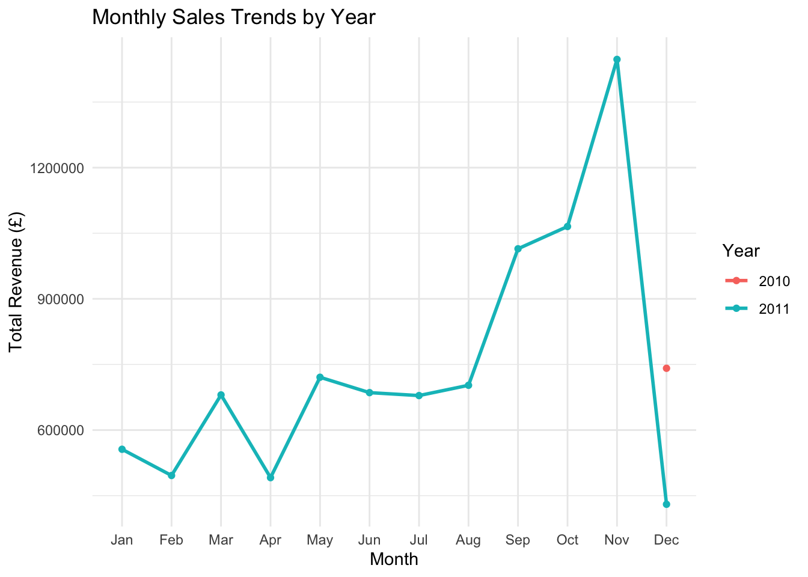
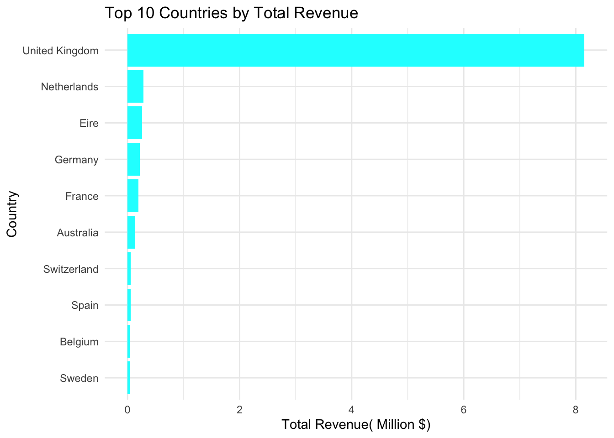
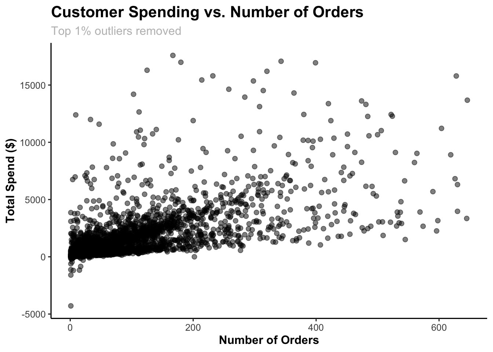
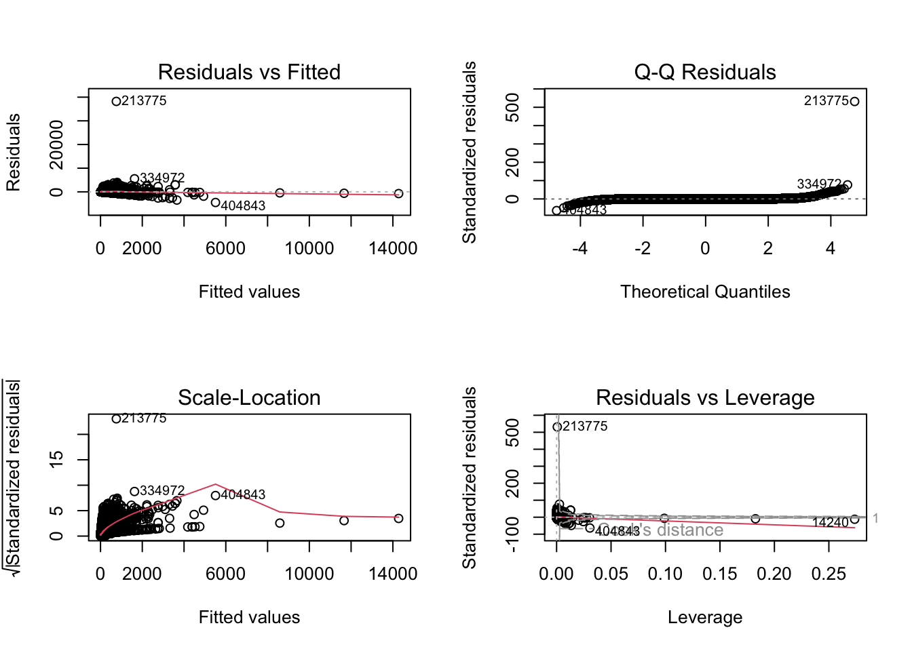

Uncovering E-Commerce Insights Through Data Analytics
Abstract
This project analyzed e-commerce sales performance by integrating statistical modeling in R with an interactive business intelligence dashboard in Tableau. Using a dataset of over 500,000 online transactions, the objective was to identify the key factors influencing customer spending and uncover insights to inform strategic business decisions.
After cleaning and transforming the data, exploratory analysis revealed that the majority of sales originated from Europe, while Asia and other niche regions recorded higher average transaction values. A multiple linear regression model confirmed that Quantity and Unit Price were the most significant predictors of total transaction value, and highlighted regional variations in purchasing behavior.
To tie it all together, an interactive Tableau dashboard was developed to visualize key performance metrics such as revenue trends, return rates, and customer behavior. This dashboard allows users to explore patterns dynamically and derive actionable insights. Overall, the project demonstrates how combining statistical analysis with visual tools can really help make sense of complex data and lead to smarter business strategies.
1. Introduction
In today’s retail world, businesses rely heavily on data to make smart decisions. For this project, I explored how business intelligence (BI) tools can help uncover patterns in e-commerce sales, customer behavior, and product performance using a dataset with over half a million transactions.
The project has two main parts. First, I used R for data wrangling, exploratory analysis, and regression modeling to figure out what drives total purchase amounts. Then, I built an interactive dashboard in Tableau to turn those findings into visual insights that decision-makers could actually use.
By combining statistical modeling with visual storytelling, this project shows how BI tools can turn raw data into meaningful insights. It was a great way to apply both technical and creative skills while walking through the full BI workflow, from cleaning the data to communicating the results.
2. Data Summary and Cleaning
For this project, I worked with an e-commerce dataset from Kaggle that includes over 540,000 transaction records and eight key variables: InvoiceNo, StockCode, Description, Quantity, InvoiceDate, UnitPrice, CustomerID, and Country. Each row represents a single product purchased or returned as part of a customer invoice.
Before diving into analysis, I did a preliminary review to understand the structure and quality of the data. A few things stood out:
- Fields like
InvoiceNo,StockCode,Description, andCountryare stored as text, which makes sense since they’re identifiers or categories. - The
Quantityvariable ranges from –80,995 to 80,995. Negative values indicate returns or cancellations, while most purchases involve small positive quantities (with a median of 3). InvoiceDateis stored as a character string, so I had to convert it to a proper datetime format to do any time-based analysis.UnitPricealso has some extreme values from –11,062 to 38,970. Negative or zero prices likely point to errors or adjustments, but most items are low-cost (median = 2.1).CustomerIDis missing in about 25% of the records, which could mean guest checkouts or missing data.
You can find the dataset here: Ecommerce Data on Kaggle
Data Wrangling
As part of the data preparation process, I carried out several cleaning and transformation steps to make sure the analysis would be accurate and reliable.
First, I converted the InvoiceDate field from text to a proper datetime format so I could analyze trends over time, like monthly sales and year-to-date performance. I also dealt with extreme or invalid values in Quantity and UnitPrice: negative quantities were treated as returns, and I kept only reasonable quantities (between 0 and 10,000).
For missing or invalid CustomerID entries, I replaced them with “Guest” so that anonymous transactions could still be included without mixing them up with known customers. I also cleaned up text fields like product descriptions and country names by standardizing them to title case and removing extra spaces to avoid grouping issues.
To prevent double-counting, I removed duplicate records that had the same InvoiceNo and StockCode. Finally, I created a few new varaiables to support analysis: TotalPrice (calculated as Quantity × UnitPrice) to measure transaction value, and TransactionMonth and TransactionYear to help with time-based insights.
3. Exploratory Data Analysis
After cleaning the dataset, I conducted a thorough exploratory analysis to understand the key patterns, trends, and relationships in the data. The goal of this stage was to inform the regression modeling and identify metrics that can be highlighted in the Tableau dashboard.
Monthly Sales Trends
To explore how sales changed over time, I grouped transactions by TransactionMonth and calculated total monthly sales. Then I plotted a line chart to visualize the trends. This made it easier to spot seasonal spikes, dips, and other patterns, like possible effects from promotions or holidays, that could influence overall performance.

The monthly revenue data shows noticeable sales peaks toward the end of the year, most likely due to holiday-season demand. In contrast, mid-year sales tend to dip, which suggests slower retail activity during months without major promotions. These patterns are useful for planning ahead, especially when it comes to managing inventory, staffing, and marketing campaigns.
Top Countries by Revenue
To figure out which regions contributed most to overall sales, I grouped the data by country and calculated total revenue for each one. Then I ranked the countries to highlight the top performers. This helped reveal which markets were driving the bulk of transactions and where business opportunities might be strongest. These insights are especially useful for targeting marketing efforts and planning regional strategies.

The data shows that the United Kingdom is by far the top contributor to total sales, making up the majority of all transactions. Other European countries like France, the Netherlands, and Germany form a secondary tier of market activity. This pattern suggests that the e-commerce business is primarily UK-based, with some international presence that appears to be expanding gradually.
Customer Spending Behavior
To understand how customers differ in their purchasing habits, I grouped the data by customer ID and calculated both total spending and number of orders for each individual. Then I visualized these metrics in a scatterplot to highlight patterns in engagement and value. This helped reveal clusters of behavior such as frequent low spenders and occasional high-value buyers. These insights are useful for identifying customer segments and shaping loyalty programs or targeted marketing strategies.

The scatterplot shows a clear positive relationship between the number of orders and total spending meaning that customers who order more tend to spend more overall. A few high-value customers stand out, contributing a large share of total revenue.
These findings set the stage for the next part of the project: regression modeling to explore what drives transaction value and customer spending. Overall, the exploratory analysis helped me understand the structure of the dataset, spot key trends, and identify metrics that are relevant for business decisions. These insights will guide the modeling process and shape the Tableau dashboard, making sure the final output delivers meaningful and actionable business intelligence.
4. Regression Analysis
The goal of this regression analysis is to identify the key factors that influence the total purchase amount per transaction within the e-commerce dataset. This helps quantify how attributes such as quantity purchased, unit price, and country predict the total value of a transaction.
Before fitting the model, the dataset was filtered to include only valid, non-cancellation transactions and positive values of price and quantity.
Fitting a Multiple Linear Regression Model
To understand what drives the total value of each transaction, I built a multiple linear regression model using TotalPrice (calculated as Quantity × UnitPrice) as the dependent variable. I selected three predictors based on their relevance to business performance:
Quantity: the number of items purchased in a transaction
UnitPrice: the price per item
Country: the location of the customer
Since modeling at the country level would create too many coefficients and make interpretation messy, I grouped countries into broader continent categories. This helped simplify the model while still capturing geographic differences in spending behavior. The regression results offer a clearer view of how quantity, pricing, and regional factors influence transaction value.
Call:
lm(formula = TotalPrice ~ Quantity + UnitPrice + Continent, data = regression_data)
Residuals:
Min 1Q Median 3Q Max
-4500 -5 -4 1 38213
Coefficients:
Estimate Std. Error t value Pr(>|t|)
(Intercept) 1.243762 3.779722 0.329 0.74211
Quantity 1.146571 0.002626 436.588 < 2e-16 ***
UnitPrice 1.054023 0.002779 379.284 < 2e-16 ***
ContinentAsia 13.321498 4.544457 2.931 0.00337 **
ContinentEurope 2.547604 3.780839 0.674 0.50043
ContinentMiddle East 7.630718 5.126617 1.488 0.13663
ContinentOther 16.697846 4.044154 4.129 3.65e-05 ***
---
Signif. codes: 0 '***' 0.001 '**' 0.01 '*' 0.05 '.' 0.1 ' ' 1
Residual standard error: 71.91 on 519593 degrees of freedom
Multiple R-squared: 0.3892, Adjusted R-squared: 0.3892
F-statistic: 5.518e+04 on 6 and 519593 DF, p-value: < 2.2e-16To verify whether conditions for inference were met, I performed residual diagnostics to test the assumptions of linearity, constant variance, and normality.

GVIF Df GVIF^(1/(2*Df))
Quantity 1.004309 1 1.002152
UnitPrice 1.000473 1 1.000237
Continent 1.004303 4 1.000537The diagnostic plots show no major violations of model assumptions. Residuals are approximately homoscedastic, and the QQ-plot indicates that the normality assumption holds reasonably well. Although, there are a few potential outliers. Variance Inflation Factor (VIF) values for all predictors were below 5, suggesting no concerning multicollinearity.
Results and Interpretation
The final MLR model is:
\[ \text{TotalPrice} = 1.24 + 1.15(\text{Quantity}) + 1.05(\text{UnitPrice}) + 13.32(\text{Asia}) + 2.55(\text{Europe}) + 7.63(\text{Middle East}) + 16.69(\text{Other}) + \varepsilon \]
The regression model examined how Quantity, UnitPrice, and Continent influence the total transaction value (TotalPrice). It turned out to be statistically significant overall, evidenced by \(p < 0.001\) of the F-statistic. The \(R^2\) value of 0.3892, indicates that approximately 39% of the variation in transaction value is explained by these predictors.
Both Quantity and UnitPrice are strong and statistically significant predictors of total sales \((p < 0.001)\). The coefficient for Quantity (1.15) suggests that for each additional unit purchased, total transaction value increases by approximately $1.15 on average, holding all else constant. The coefficient for UnitPrice (1.05) indicates that for every one dollar increase in product price, total transaction value increases by about $1.10 on average, reflecting the direct impact of pricing on revenue.
The categorical variable Continent captures geographic differences in transaction values relative to the baseline (Americas). Asia (\(\beta\) = 13.32, p = 0.00337) and Other (\(\beta\) = 16.69, p < 0.001) regions show significantly higher average transaction values compared to the baseline. Europe and Middle East are not statistically significant, suggesting relatively similar transaction values to the reference group. These results indicate that transactions in Asian and smaller “Other” markets (e.g., smaller or niche countries) tend to involve higher-value purchases, while European and Middle Eastern transactions do not differ meaningfully from those in the Americas after accounting for quantity and price.
While the model explains a substantial portion of variation in transaction value, several factors not captured in the data likely influence total sales, such as product category, promotional discounts, and customer demographics. Therefore, the model should be interpreted as capturing broad business-level relationships rather than predicting individual transaction values with precision.
5. Interactive Dashboard Visualization
To complement the statistical modeling, I developed an interactive Tableau dashboard to visualize key e-commerce performance metrics. The dashboard provides an intuitive way to explore sales trends, customer purchasing behavior, and product-level performance across time and regions.
The dashboard integrates the cleaned dataset used in the regression model and presents metrics such as:
- Total Sales and Year-to-Date Growth: Summarizes overall revenue and its change relative to the previous year.
- Sales by Continent and Country: Highlights market distribution and reveals Europe as the dominant contributor to revenue.
- Monthly Sales and Returns Trends: Shows seasonality in transactions and product returns over time.
- Top Products and Customers: Identifies the highest-grossing products and key customer metrics driving revenue.
These interactive components allow users to filter results dynamically by market region, in order to provide a business intelligence perspective on the data beyond the regression results.
The dashboard was built using Tableau Desktop and published on Tableau Public for interactive access. You can explore it below:
Note: The embedded dashboard below may take a few seconds to load depending on your network connection. For faster access, you can view it directly on Tableau Public using this link: Open Dashboard on Tableau Public

6. Discussion and Business Implications
The regression model and the Tableau dashboard collectively provide a comprehensive understanding of the key factors driving e-commerce performance.
The regression analysis showed that both Quantity and Unit Price are highly significant predictors of total revenue. As expected, higher quantities and prices lead to larger transaction values. Regional effects also emerged: transactions from Asia and Other regions (which include smaller markets outside Europe and the Middle East) had significantly higher sales values compared to the baseline category (Americas). In contrast, European sales, while dominant in volume, did not differ significantly in per-transaction value, which suggests that European buyers purchase more frequently but in smaller amounts per order.
The interactive dashboard complements these findings by offering a visual perspective on trends and distributions. Europe accounts for the majority of transactions, confirming the regression finding that quantity drives revenue more than price in this market. In most market regions, Monthly sales visualizations show peak activity towards the end of the year during the holiday season, suggesting strong seasonality. The dashboard also highlights specific months and products with unusually high return rates, which can help identify potential quality or fulfillment issues.
Business Implications
From a strategic perspective, these findings suggest several actionable takeaways:
- Leverage High-Value Markets: Asia and smaller “Other” regions represent opportunities for premium-priced products or localized marketing efforts.
- Optimize Product Mix in Europe: Since transaction frequency is high but per-order value is lower, strategies such as bundling or upselling could improve margins.
- Seasonal Inventory Planning: Retailers should stock up in advance of seasonal peaks and prepare return-handling capacity post-holiday.
7. Conclusion and Future Work
This project showcased how business intelligence and statistical analysis can turn raw e-commerce data into actionable insights. By using R for data wrangling, exploration, and modeling; and Tableau for dynamic visualization, I followed a workflow that mirrors real-world analytics practices.
The regression analysis confirmed that Quantity and Unit Price are the strongest drivers of transaction value, while regional patterns revealed opportunities for market expansion beyond Europe. The Tableau dashboard helped translate these findings into an intuitive format for decision-makers, thus bridging the gap between technical analysis and business strategy.
While the model was statistically significant, it didn’t capture all the variability because of missing data on customer demographics, product categories, and marketing efforts that limited its predictive depth. This opens the door for future enhancements like time-series forecasting, customer segmentation, and integration of more external factors.
Overall, this project highlights the power of data-driven decision-making in e-commerce. By combining analytical rigor with visual storytelling, businesses can move from simply describing what happened to predicting what’s next and making smarter, more strategic choices.